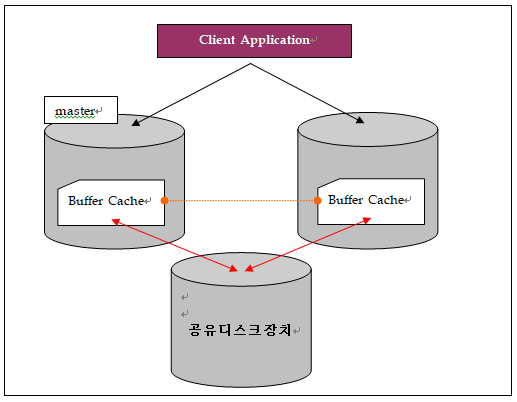
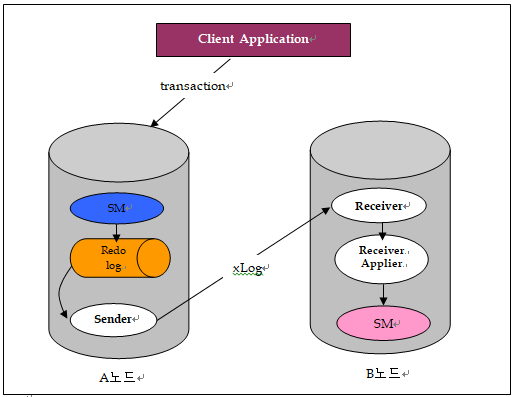
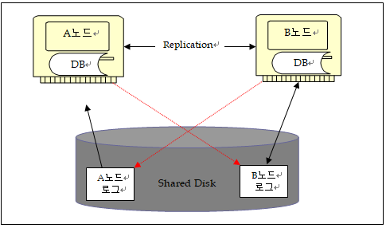
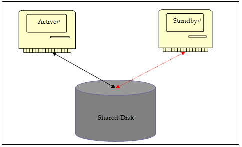
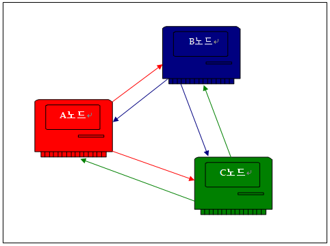

개요
무정지 서비스를 제공하는 시스템 운영환경에서는 다음 2가지를 고려해야 한다.
- 장애를 대비한 가용성 확보
- 성능을 고려한 시스템 구성 및 증설
이를 구현하기 위한 방법으로는 디스크공유방식, 네트웍을 이용한 이중화방식, HA솔루션을 이용한 절체방식이 현업에서 많이 사용되고 있다.
ALTIBASE는 기본적으로 성능을 고려한 고가용성 방안으로 네트웍에 기반하는 데이터의 이중화 구성을 제시하고 있다. 본 문서에서는 ALTIBASE가 제시하는 이중화의 정확한 이해와 그것을 바탕으로 한 효율적인 시스템 구성에 대해 설명한다. (ALTIBASE는 위에 명시된 방법 중 디스크공유 방식의 고가용성 방법은 지원하고 있지 않다. )
본 문서는 ALTIBASE 버전7 이상을 기준으로 작성되었다.
고가용성
고가용성이 지향하는 목표와 현재 업계에서 많이 사용되는 방식의 장단점을 설명한다.
노드
본 문서에서는 사용자가 운영하는 서비스를 수행하기 위해 구성한 한대 이상의 네트웍으로 연결된 각각의 서버를 지칭한다. 각 노드는 단독으로도 서비스가 가능하고 동일서비스를 모든 노드가 나누어 처리할 수 있다.
Fail-over
- 서비스를 위해 구성된 노드간에 장애발생 시 서비스를 다른 정상노드로 넘기는 과정을 지칭한다. Fail-over는 최소한의 서비스 다운타임만을 허용한다.
고가용성을 위한 방안
사용자는 고가용성을 위해 동일 혹은 서로 다른 서비스에 대해 2개 이상의 노드로 그룹을 만들어 서비스 시스템을 구성한다. 시스템은 다음 2가지 목표를 만족해야 한다.
- 단독노드로 구성한 환경에 비해 현저한 성능저하가 발생하면 안됨.
- 장애발생으로 인한 Fail-over상황에서 최소한의 서비스 다운타임만을 허용.
고가용성은 사용자가 운영하는 서비스 시스템이 최대의 성능을 발휘하도록 보장하는 것을 요구하며 어떠한 장애유형에 있어서도 최소한의 다운타임만으로 서비스가 즉각, 재개될 수 있는 방법을 요구한다고 볼 수 있다. (높은 성능과 지속적인 서비스를 목표함)
DBMS 관점에서 보면 고가용성을 위해서는 다음의 2가지 방법을 주로 사용하고 있다.
방법
설명
디스크공유 방식
모든 노드가 접근 가능한 디스크에 단일DB를 위치시켜 공유하는 방식 (DB를 공유)
네트웍이중화 방식
모든 노드는 각각의 DB를 소유하며 네트웍을 통해 변경된 사항을 전송 및 반영하는 방식 (각 노드가 개별 DB를 소유)
- 디스크공유 방식에 대해 먼저 자세히 알아본다.
디스크공유 방식은 각 노드가 고유의 버퍼캐쉬를 가지면서 전체 그룹 내에는 버퍼캐쉬에 대한 동기화를 관장하는 master개념의 노드가 반드시 존재하게 된다. 각 노드는 자신의 버퍼캐쉬에 존재하지 않는 데이터를 공유디스크에서 읽어야 할 경우 master노드에 읽기를 요청하게 되고 master노드는 그룹 내에 속한 노드가 갖고 있는 버퍼캐쉬에 이미 소유한 노드가 있으면 그 노드로부터 복제하여 전송해 주거나 혹은 요청한 노드가 디스크로부터 읽기가 가능하도록 허용하는 형태로 구성된다. 변경의 경우도 동일하게 master노드가 변경을 허용해야만 접근이 가능하다.
이 형태는 데이터의 정합성을 위해서는 최선의 방법일 수 있으나 다음과 같은 문제점을 가지고 있다.
1. 모든 노드가 master노드와 통신으로 인한 경합 및 버퍼에 대한 접근대기로 인한 상당한 성능저하를 유발한다.
2. 모든 노드간에 버퍼의 고속복제를 위한 통신장비를 필요로 한다. 만일, 이와 같은 통신장비 및 회선에 장애가 발생할 경우 전체적인 장애를 가져올 수 있다.
3. 공유디스크 장치에 장애가 발생하는 경우도 전체 시스템이 서비스할 수 없는 문제가 발생하게 된다.
이에 반해, 네트웍이중화 방식은 일반적인 단독시스템의 운영모델을 기반으로 하면서 추가적인 트랜잭션로그의 전송을 기반으로 하고 있다. 따라서, 성능 면에서는 네트웍을 통한 로그전송 비용 정도 외에는 필요치 않기 때문에 단독시스템 대비 90% 이상의 성능수준을 유지할 수 있다.또한, 그룹내의 특정노드가 장애가 발생하더라도 각각이 별도의 DB를 가져가는 구조이기 때문에 지속적인 서비스를 유지하는 것이 가능하다.
하지만, 네트웍을 통해 트랜잭션로그를 전송하는 방식은 로컬시스템에서 발생한 트랜잭션의 시점과 전송 받은 상대편 노드에서 발생하는 트랜잭션의 시점의 차이로 2개 이상의 노드에 존재하는 데이터의 정합성을 100% 정확하게 보장하는 것은 불가능한 문제를 가지고 있다. 본 문제에 대해서는 이후 내용에서 자세히 다루기로 한다.위 2가지 방식은 모두 각각의 장단점을 지니고 있다. 따라서, 사용자는 업무상 목적하는 바에 따라 각 방식에 대한 정확한 이해를 통해 최적의 시스템을 구성하는 것에 목적을 두면 된다.
ALTIBASE는 성능본위의 제품으로 서비스운영에 있어 최대한의 성능을 발휘하면서 고가용성을 실현 하는 데에 중점을 두고 있다. 이제부터는 어떻게 네트웍이중화가 데이터의 정합성 문제를 가지고 있음에도 불구하고 고가용성으로 사용 가능한 방식인지에 대해 이중화에 대한 이해를 시작으로 알아보도록 한다.
이중화의 이해
이중화의 개념 및 동작구조에 대한 설명한다
이중화의 기본개념
ALTIBASE가 제공하는 이중화는 다음과 같은 형태를 취한다.

ALTIBASE내부에서 트랜잭션 처리에 필요한 여러 쓰레드들은 Storage-Manager 모듈을 이용한다 (SM은 Storage-Manager의 약어). SM 모듈을 사용하는 로그쓰레드는 트랜잭션의 처리과정 중 복구를 위해 필요한 트랜잭션 로그를 기록하는 역할을 수행한다.
기본적인 전체 흐름은 로컬에서 트랜잭션의 로그가 SM에 의해 기록되면 Sender가 기록된 트랜잭션 로그를 읽어 들여 지정된 노드(들)에게 전송하고 해당 노드의 Receiver는 전송 받은 로그를 분석하여 다시 Receiver 자신의 노드에 반영하는 구조로 동작한다.
● 트랜잭션로그 기반의 네트웍을 이용한 비동기 방식의 이중화이다.
● 이중화의 구성은 n개의 테이블로 구성될 수 있으며 이중화 구성에 포함되는 테이블은 반드시 PK를 가지고 있어야 한다.
● 이중화를 위한 네트웍은 안정성을 위해 n개의 네트웍으로 이중화 할 수 있다.
Sender와 Receiver의 동작을 알아보도록 한다.
Sender
select문을 제외한 Insert/Update/Delete 등의 변경 트랜잭션이 발생하면 처리 과정 및 복구를 위해 필요한 정보들이 기록된다. Sender는 이 트랜잭션 로그를 기반으로 어떤 유형의 트랜잭션이 발생하였고 그로 인해 데이터의 변경 이전 값과 변경 후의 값이 무엇인지 알아낸다.
Sender는 읽어낸 로그를 기반으로 xLog라고 부르는 하나의 전송용 데이터를 만들어내는데 다음과 같은 정보를 담은 구조체라고 볼 수 있다.
항목
설명
테이블
수신노드에서 변경대상 테이블을 찾을 수 있어야 함.
PK
수신노드에서 변경대상 데이터를 빠르게 찾을 수 있어야 함.
Column
수신노드에서 변경할 테이블의 칼럼정보를 찾을 수 있어야 함.
Before Value
수신노드와 송신노드간에 데이터가 동일한지 비교를 위해 이용.
After Value
수신노드에서 데이터의 값을 변경해도 되는 경우 이 값을 이용한다.
Sender는 트랜잭션 별로 필요한 데이터만 모아 xLog을 만들어 상대편노드의 Receiver에게 전송한다.
트랜잭션
전송로그
INSERT
테이블, Column Value
UPDATE
테이블, PK, Before Value, After Value
DELETE
테이블, PK
로컬에서 발생하는 트랜잭션은 이중화로 전송했는지의 여부(Sender만 확인)와 상관없이 트랜잭션이 진행되기 때문에 이중화로 인한 간섭이 전혀 발생하지 않음으로 빠른 처리 성능을 보장한다. (이런 형태를 Lazy모드의 이중화라고 부른다.)
이럴 경우 “상대편이 받지 못한 데이터가 있을 수 있지 않을까?” 하는 의문을 가질 수 있는데 이 부분에 대한 해결방법은 Receiver측면에서 다시 자세히 설명한다.
Sender의 전송방식은 기본설정이 lazy모드이며 상대편 노드에 트랜잭션이 반영되는 것까지 확인하는 방식으로 설정할 수 있는데 이것을 Eager모드라고 부른다.
Receiver
Receiver는 실제 수신된 xLog를 Receiver-Applier (이하 Applier)에게 전달한다. Applier는 수신 받은 xLog가 이미 상대편노드에서 QueryProcessor를 거친 이후 기록된 트랜잭션 로그이기 때문에 별도의 Validation과정 없이 SM으로 처리를 요청하게 된다. (QueryProcessor는 ALTIBASE 내부에서 수행되는 질의에 대한 validation 및 optimization을 수행하는 내부 모듈을 의미한다.)
수신노드에서 반영할 때에는 반드시 수신 받은 데이터의 Before value와 자신의 노드에 존재하는 데이터의 value가 동일한지를 확인 한 후 반영한다.
반영완료 후 Receiver가 상대편 Sender에게 ack를 보내면 Sender는 자신이 재전송해야 할 위치를 변경하게 된다. 즉, 이중화를 위한 통신버퍼에는 여러 건의 트랜잭션 xLog가 담길 수 있기 때문에 전송간에 실패 혹은 상대편노드의 장애를 대비하여 Sender는 자신이 보내는 로그의 위치 및 재전송해야 하는 트랜잭션로그의 위치를 항상 기록해 두고 있다. 이 정보는 Receiver로부터 어떤 부분까지 반영되었다는 ack를 받을 때 갱신되게 된다.
따라서, Sender가 실제 수신노드가 반영했는지를 즉각 확인하지 않아도 지연된 형태로 확인을 하고 있기 때문에 Sender가 보내야 할 로그가 상대편에 전송되지 않는 경우는 절대 발생하지 않는다. 이는 네트웍상의 장애가 발생하여도 동일하게 동작이 된다.
즉, 네트웍 장애가 발생했음을 감지하면 Sender는 정해진 주기 단위로 네트웍을 검사하게 되고 정상복구가 된 것을 감지하면 상대편노드의 Receiver와 연결한 후 자신이 재전송해야 하는 위치부터 다시 보내게 되는 것이다.
이중화 환경의 발생 가능한 문제점
이중화는 네트웍을 이용하기 때문에 다음의 2가지 유형의 문제가 발생할 수 있다.
- 데이터의 충돌 (Conflict)
- 데이터 전송의 지연 (Gap)
2개의 노드에서 동일한 PK를 가지는 데이터에 대해 서로 다른 값으로 변경 시키는 트랜잭션이 발생할 경우 디스크공유 방식은 각각의 처리를 요구 받은 노드가 한번씩 순차적으로 변경트랜잭션이 진행될 수 밖에 없다. 따라서, 이런 트랜잭션이 빈번하면 성능은 느려질 수밖에 없는 구조를 가지고 있다.
반면에, 이중화는 디스크공유 방식과는 다르게 로컬트랜잭션의 발생 시 다른 노드의 데이터에 대한 변경을 고려하지 않기 때문에 서로간의 간섭이 발생하지 않지만 이로 인해 데이터가 서로 다르게 존재할 수 있는 데이터의 충돌(Conflict)현상이 발생하게 된다.
발생 순서
A노드
B노드
발생 전
Pk=1, c1=10
Pk=1, c1=10
동시에 Update
Update t1 set c1 = 15 where pk = 1
Update t1 set c1 = 20 where pk = 1
발생 후
Pk=1, c1=15
Pk=1, c1=20
Sender
(t1, pk=1, c1=10 --> 15) 전송
(t1, pk=1, c1=10 --> 20) 전송
위의 예제처럼 발생 전에는 동일한 데이터이지만 동일한 PK를 갖는 데이터에 대해 서로 다른 값으로 변경을 처리하면 각각의 노드는 다른 노드의 트랜잭션과 상관없이 진행하게 된다. 이때, 이미 변경이 완료된 상태에서 데이터가 서로 전송되면 데이터의 이전값을 서로 비교하는데 A노드의 경우 현재 15이고 수신 받은 xLog의 기존값은 10이라고 기록되어 있기 때문에 수신 받은 xLog에 대한 트랜잭션을 실패시키게 된다. 이러한 유형을 Update Conflict라고 부른다.
Conflict의 경우는 다음과 같다.
종류
설명
Dup Conflict
Insert등의 수행 시에 수신노드에서 이미 동일한 PK를 가지는 데이터가 존재할 경우
Update Conflict
Update를 수행할 경우 변경할 대상 칼럼의 현재 값이 수신 받은 이전 값과 동일하지 않은 경우
Not Found Conflict
수신노드에 PK에 대해 Update 또는 delete를 수행할 경우 데이터가 존재하지 않는 경우.
즉, 2개 이상의 노드에서 동일한 PK에 대해 서로 다르게 데이터를 변경하는 등의 트랜잭션이 동시에 발생할 경우 데이터가 틀린 상태로 존재하게 되는 경우들이 발생할 수 있다는 점이다.
이를 회피하기 위해서는 각각의 노드에 대해서 분리된 범위의 PK를 고려한 트랜잭션 유발을 통해 해결이 가능할 수 있다. 즉, Full Active방식이 아닌 PK범위를 고려한 Active/Active 구성을 해야 한다.
ALTIBASE에서는 이 부분에 대해 REPLICATION_UPDATE_REPLACE라는 속성을 제공하여 UPDATE트랜잭션에 대해 이전의 값이 다르더라도 수신 받은 값으로 변경을 할 수 있게 하고 있다. 단, 이 문제는 Update Conflict에 대한 완벽한 해결책이 아니다. 지속적으로 서비스를 수행하는 모든 노드에서 동일한 PK를 가지는 데이터에 대해 계속 다른 값으로 Update를 하면 결국 다시 서로 다른 값을 가질 것이기 때문이다. 이 속성은 결국 어느 순간 데이터가 맞아질 것이란 추론에 의한 속성제공일 뿐이다.
이중화의 또 다른 문제는 상대편 노드로의 xLog전송 속도보다 송신노드의 변경 트랜잭션 로그의 누적속도가 빠를 경우, 특정시점에 송신노드와 수신노드에서의 데이터의 조회결과가 다를 수 있다는 점이다. 즉, 미처 네트웍을 통해 상대편 노드로 전송하지 못한 트랜잭션로그가 송신노드에 누적되어 있는 경우를 의미하며 이를 이중화의 갭(Gap)이라고 부른다.
이러한 문제들은 사용자 입장에서 고성능의 데이터처리가 가능해도 데이터의 정합성 문제에 있어 이중화를 선택하는 것에는 주저하게 할 수 있다. 다음 장에서는 이러한 데이터충돌 및 지연에 대해 어떻게 적절하게 회피하여 효율적인 이중화 구성을 통한 서비스를 가능하게 할지에 대해 알아보도록 한다.
효율적인 이중화 구성
앞에서는 네트웍을 이용한 데이터 이중화의 단점으로 지적된 데이터충돌과 지연을 고려한 이중화 구성방법을 설명한다. 먼저 ALTIBASE가 제공하는 이중화의 보완기능인 Off-line Replicator기능과 HA솔루션을 이용한 구성방법을 설명한다.
Off-Line Replicator
이중화 전송의 지연에서 큰 문제는 송신노드의 장애시점에 미처 보내지 못한 데이터로 인한 정합성의 보장문제이다. 전송의 지연은 PK를 분리한 시스템 구성 내에서 컨트롤이 가능할 경우 시간의 차이가 있을 뿐 반영이 된다는 사실에는 변함이 없지만 지연된 상태에서 발생하는 장애는 업무상 크리티컬 할 수 있다.
ALTIBASE는 이 문제의 해결을 위해 Off-Line Replicator라는 기능을 ALTIBASE 버전 5.3부터 제공하고 있다. 이 기능은 Active하게 서비스하던 서버가 장애가 발생하면 정상서버에 Off-Line Replicator를 만들어서 (SQL문 형태로 운영자가 쉽게 생성이 가능함.) 장애노드의 트랜잭션로그파일을 직접 읽어 전송 받지 못한 데이터를 직접 반영함으로써 데이터의 정합성문제를 해소하는 방식이다.
Off-Line Replicator의 사용을 위해서는 장애가 난 서버와 디스크를 공유하는 형태로 디스크 공유장비에 모든 노드가 각각의 트랜잭션로그를 쓸 수 있도록 구성을 하거나 혹은 FTP를 통해 장애서버에 접속하여 트랜잭션로그를 가져와 반영하는 방법이 모두 가능하다.
이 방법을 통해 데이터의 미전송에 의한 정합성을 해소하고 정상노드에서 서비스를 개시하면 된다.
구성은 시스템환경에 따라 차이는 있으나 기본적으로 위와 같이 구성을 하여 장애가 발생하는 시점에 정상노드에서 장애노드의 미처 전송되지 못한 트랜잭션로그를 직접 읽어 정상노드 스스로 반영하여 서비스절체를 준비하는 방식이다.
HA솔루션을 이용한 서비스구성
HA솔루션을 이용한 구성은 한 개의 노드가 서비스를 수행하고 다른 노드는 대기상태로 존재하는 형태를 의미한다. HA솔루션이 서비스중인 노드의 상태를 주기적으로 점검하여 이상이 있다고 판단할 경우 공유된 디스크를 절체 하여 대기상태의 노드가 접근 가능하도록 조치한 후 서비스가 절체 될 수 있도록 하는 방식이다.
ALTIBASE에 적용할 경우 다음과 같은 제약이 있지만 데이터의 정합성 문제는 회피할 수 있는 장점이 있다.
- 대기상태 노드의 ALTIBASE는 구동되어 있을 수 없다. 반드시 종료 상태이어야 한다. (동시에 엔진자체가 모두 구동되어 있을 수 없다.)
- 절체 이후 구동단계를 거쳐야 함으로 메모리DB의 사용량이 큰 경우 크기에 비례하여 구동시간이 오래 걸리게 된다. 또한, 장애시점에 대량의 작업이 있었다면 구동단계에서 이에 대한 복구시간을 필요로 한다. 따라서, 서비스 다운타임이 매우 중요한 경우에는 이점을 고려해야 한다.

● Active/Standby의 의미는 서비스기준이며 Standby의 ALTIBASE는 종료된 상태를 의미한다.
일반적으로 다음과 같이 구성한다.
분류
구성항목
공유디스크
트랜잭션로그파일 및 데이터파일
각각의 노드
ALTIBASE 엔진, 추적로그파일, 라이센스, 프로퍼티파일
위와 같이 구성하면 HA솔루션에 의해 절체 되는 상황이 발생하면 공유디스크를 접근할 수 있게 되는 대기상태 노드가 공유디스크에 위치한 트랜잭션로그 및 데이터파일을 이용하여 구동하게 되고 서비스가 가능한 상태가 될 수 있다.
이러한 HA솔루션을 이용한 구성은 네트웍을 통한 이중화를 사용하고 있지 않기 때문에 절체 상황에서 이중화에 의한 데이터의 충돌문제나 이중화의 갭 문제 등은 고려하지 않아도 된다.
데이터의 지연에 대한 고려
ALTIBASE의 이중화는 일반적으로 1.2GHz이상이 CPU에서는 평균적으로 초당 10,000tps정도의 성능을 보인다. 즉, 초당 한 개의 노드 내에서 발생하는 변경트랜잭션이 위의 성능 이내이면 네트웍을 통한 이중화도 일정부분 지연 없이 처리가 가능하다는 계산을 할 수 있다.
서비스자체가 지속적인 변경만 처리하는 경우라면 데이터지연은 네트웍을 통한 이중화구성에서는 회피할 수 없다. 하지만, 모든 트랜잭션 내에 변경에 대한 트랜잭션 양이 이중화로 감당할 수 있는 수준이고 데이터의 일시적인 지연을 고려할만한 서비스라면 사용이 가능하다고 판단할 수 있다.
만일에 장애시점에 보내지 못한 데이터가 문제가 된다 하더라도 서비스 절체 전 Off-Line Replicator를 통해 복구 이후 서비스절체를 하는 방법으로 서비스자체에 문제가 되지 않도록 구성이 가능하다.
이와 같은 구성은 예측에 의한 것이며 전송지연을 어느 정도 감안할 경우이며 만일, 전송의 지연을 고려할 수 없는 서비스라면 이중화의 설정모드를 Eager모드로 구성하는 방법을 사용할 수 있다.
이중화 동작방식
설명
Lazy
송신노드는 로컬트랜잭션의 진행과 xLog의 전송이 서로 대기하지 않음.
Eager
송신노드는 로컬트랜잭션을 먼저 반영한 후 xLog를 수신노드에 전송하고 반영 후 결과까지 대기
지금까지 설명한 이중화의 데이터 전송지연 문제점은 Lazy모드에서 발생할 수 있으며 이를 회피하기 위해 Eager모드를 제공하고 있다. Eager모드는 상대편노드의 반영까지 확인하기 때문에 데이터의 지연은 발생하지 않는다. 하지만, 상대편노드의 트랜잭션 반영을 대기해야 하기 때문에 Lazy에 비해 현격한 성능저하를 가져온다. 하지만, 이 부분도 전체 트랜잭션 중에 변경업무가 어느 정도의 비중인가에 따라 성능저하의 정도는 크지 않을 수 있다.
따라서, 사용자는 업무의 사안에 따라 Lazy/Eager를 구분하여 사용하면 된다. 업무가 반드시 데이터의 지연을 고려하지 않아도 된다면 성능을 발휘할 수 있는 Lazy모드를 쓰고 지연을 고려해야 하는 업무라면 Eager를 사용하면 된다. 아울러, 세션 별로 Eager/lazy를 지정할 수 있기 때문에 세션단위로 구분하여 적용하면 된다.
업무
이중화의 동작방식
계좌잔고, 예수금
이 업무를 수행하는 세션은 Eager모드로 수행
로그인 타임정보
이 업무를 수행하는 세션은 Lazy모드로 수행
● Eager모드는 Lazy모드와 달리 Conflict 발생 시 로컬트랜잭션도 실패한다. 따라서, Lazy모드에 의한 트랜잭션으로 데이터가 달라지는 경우가 발생하지 않도록 잘 설계가 되어야 한다.
데이터의 충돌을 방지하기 위한 서비스구성
데이터충돌은 이중화 환경에서 동시에 동일한 PK를 가진 데이터를 접근하려는 경우 발생한다. 따라서, 사용자 서비스프로그램이 동일한 PK에 접근하지 않게 원천적인 서비스구성을 하는 것을 권장한다.
구성
서비스 구성의 예1
서비스 구성의 예2
A노드
변경트랜잭션 + 조회트랜잭션
서울, 경기 지역의 트랜잭션
B노드
조회트랜잭션
충청, 전라, 경상 지역의 트랜잭션
서비스 구성의 예2번과 같은 구성에서 트랜잭션의 분산과 같은 방법은 사용자가 개발하는 단계에서는 고려할 사항이 많아진다. 어떻게 범위를 나눌 것이며 어떻게 구현할지에 대해 더 많은 고려를 필요로 한다.
ALTIBASE는 데이터의 충돌에 대하여 다음의 기본적인 기능을 제공한다. 각 부분별 서비스구성에 적합한 구성을 찾는 것이 중요하다.
제공방식
설명
REPLICATION_UPDATE_REPLACE=1
수신된 xLog의 Before Value와 수신노드의 대상데이터의 값이 일치하지 않아도 Update를 수행하는 방법
Master / Slave 방식
각 노드를 Master, Slave로 지정하여 Conflict발생 시 아래와 같이 동작한다.
트랜잭션
Master
Slave
Insert
무시
기존 데이터 삭제 후 반영
Update
무시
그대로 반영
Delete
무시
무시
TimeStamp 방식
이중화에 구성되는 테이블에 Conflict 발생 시 각각의 TimeStamp를 비교하여 더 이후의 발생한 데이터로 일치시키는 방법
● 자세한 설명은 매뉴얼을 통해 확인할 수 있다.
데이터 정합성을 고려한 이중화 구성
앞에서 살펴본 바와 같이 이중화는 데이터의 전송지연 및 충돌이란 문제를 고려한 서비스 시스템구성을 해야 하는데 ALTIBASE가 제공하는 기능을 이용해 다음과 같이 구성한다면 데이터의 정합성 및 지연에 대한 문제를 완벽하게 해결할 수 있다.
- Active/Standby 형태의 구성
- Off-Line Replicator를 통한 장애복구
모든 서비스는 한쪽에서 수행을 하고 장애가 발생하면 앞서 설명한 Off-Line Replicator를 통해 미처 반영되지 못한 데이터에 대한 반영을 수행하고 서비스를 절체 하여 서비스를 개시하는 방법을 의미한다.
상황구분
A노드
B노드
정상 서비스
모든 서비스 처리
이중화 로그만 수신, 대기 상태
장애 발생
장애복구 수행
Off-Line Replicator를 통해 B노드가 미처 받지 못한 A노드의 트랜잭션로그를 모두 반영 후 B노드에서 서비스 수행
A노드 복구
B노드로부터 장애발생 이후의 이중화 로그를 모두 수신하여 데이터 일치
자동으로 A노드의 복구를 감지하여 이중화를 통해 장애발생 이후의 모든 트랜잭션로그 전송
위와 같은 서비스 구성에서 HA솔루션을 도입하면 HA솔루션을 통해 장애발생 시 자동적으로 서비스절체를 하는 모든 과정 역시 사용자의 개입 없이 자동화 하는 것이 가능하다. Off-Line Replicator는 앞서 설명한 것처럼 SQL문 형태로 동작하기 때문에 HA솔루션에 스크립트 형태로 등록해두면 절체상황의 동작절차에 포함시켜 손쉽게 자동화 하는 것이 가능하다..
N-Way 이중화의 설계
ALTIBASE의 이중화는 N-way 이중화를 지원하며 총1:32의 노드까지 연결이 가능하다. 3개의 노드이상을 이중화로 구성할 경우 다음과 같이 이중화 객체가 만들어져야 하고 그에 따른 네트워크카드의 증설 등을 사전에 고려해야 한다.
모든 노드에는 각각의 연결대상을 위한 Sender/Receiver가 존재해야 하며 이를 위해 자신이 데이터를 보내고자 하는 대상노드와 각각 이중화 객체가 만들어져야 한다. 위의 그림에서 A노드에는 (A-B,A-C)간의 이중화 객체가 만들어져야 한다. B노드는 (B-A, B-C)간의 이중화 객체가 만들어져야 정상적으로 (A-B-C)간의 데이터를 동기화할 수 있다.
이중화의 설계의 중요성
지금까지 이중화가 가지는 단점 및 해결하기 위한 몇 가지 방법/기능들을 설명하였다. 중요한 것은 업무 목적에 적합하게 각각의 기능들을 잘 조합하여 활용할 것인가에 대한 설계 부분이라 할 수 있다. 설계단계에서는 아래 2가지의 선택을 충분히 고려해야 한다.
- 이중화의 동작방식은 lazy, Eager 중 어떤 방법을 택할 것인가? 혹은 혼용할 경우 어떤 업무를 각각의 방식으로 서비스 할 것인가?
- 데이터 충돌 및 지연에 대해 어떤 해결방안으로 적용하는 것이 적합한가?
이중화 구성을 위한 추가적인 고려사항
이중화 구성 시 사용자가 알아두어야 할 고려사항을 설명한다.
이중화 구성에 고려할 디스크용량 고려
어떤 형태로든 이중화 연결에 있어 문제가 발생하면 Sender는 로컬에 발생하는 트랜잭션에 로그를 상대편 노드로 보낼 수 없게 된다. 이 경우, 체크포인트가 발생하여도 이중화로 보낼 로그파일의 유지를 위해 트랜잭션 로그파일들을 삭제할 수 없게 된다.
따라서, 1차적인 전송지연의 장애로 인하여 2차적인 트랜잭션 로그파일의 누적으로 인한 디스크 공간 부족의 장애가 발생할 가능성이 있다. 이를 회피하기 위해 REPLICATION_MAX_LOGFILE이라는 속성을 이용하여 지정된 값 이상으로 트랜잭션 로그파일이 만들어 지게 되면 이중화 전송내역을 모두 포기하고 해당 트랜잭션 로그파일이 체크포인트 시에 지워질 수 있도록 한다.
하지만, 이 경우 사용자가 장애복구 이후에 노드간의 DB에 대한 정합성을 일치 시켜야 하는 추가적인 작업요건이 발생하기 때문에 특별한 상황이 아니라면 권장하지 않는다. 이보다는 트랜잭션로그의 일일 발생량을 고려하여 장애극복에 필요한 충분한 예상 시간만큼 누적 되어도 문제가 되지 않도록 디스크용량을 사전에 산정하는 것이 바람직하다.
대량 변경작업의 주의
이중화로 보내지는 것은 SQL기반이 아닌 트랜잭션로그 기반이다. 따라서, 대량의 변경작업이 수행되면 변경된 데이터의 건수만큼 트랜잭션로그가 상대편노드에 전송되어야 하기 때문에 매우 빈번한 서비스를 처리하는 Busy한 시스템의 경우에는 반영이 지체되게 된다. 따라서, 대량의 변경작업은 수행은 다음의 2가지 방법을 권장한다.
- limit절을 이용한 소량의 변경작업으로 나누어 수행처리.
- alter session set replication = false; 옵션을 이용하여 모든 노드에서 동일한 변경작업을 수행 (이 옵션을 수행한 세션의 트랜잭션로그는 이중화로 보내지 않겠다는 것을 의미한다.)
Sender의 상태감시
Sender는 단 한번이라도 Start된 이후에 Stop된 상태로 존재하면 자신이 보내야 할 로그를 지속적으로 유지하게 된다. 이 경우 사용자가 별도의 모니터링을 하지 않으면 트랜잭션로그의 증가로 인한 디스크 풀장애가 유발될 수 있음으로 주의해야 한다.
Replication 전용 라인
이중화를 서비스망과 분리된 전용 라인을 사용할 것을 권장한다. 특히 네트웍 대역폭이 1G이상의 망을 사용할 것을 권장한다. 또한, 네트웍 장애를 대비하여 2개 이상의 이중화 전용 랜카드를 구비하여 안정성을 확보할 것을 권장한다.
병렬 적용자 옵션 (Parallel Applier Option)
병렬 적용자(Parallel Applier)는 스토리지 매니저에 반영하는 적용자를 여러 개 생성하여 이중화 성능을 향상시켜주는 옵션이다.
수신자가 송신자로부터 받은 XLog를 병렬로 처리할 수 있도록 적용자에게 트랜잭션 단위로 분배하고, 병렬로 DML 처리를 수행함으로써 이중화 성능이 향상된다. 따라서, 이 옵션은 긴 트랜잭션으로 구성된 이중화에 적합하다. 짧은 트랜잭션들로 구성된 이중화된 트랜잭션이 많은 경우 잦은 커밋 동기화 과정을 거치기 때문에 성능 하락을 가져올 수 있다. 따라서 긴 트랜잭션들로 구성된 이중화된 트랜잭션이 많은 경우 커밋 동기화 과정이 드물기 때문에 성능 향상이 가능하다.
시퀀스 이중화
알티베이스의 시퀀스 이중화란 Fail-Over가 발생하는 상황에도 원격 서버와 지역 서버가 동일한 시퀀스를 사용할 수 있는 기능이다. 따라서 애플리케이션에서 동일한 시퀀스 및 동일한 프로그램 소스를 사용할 수 있다.
시퀀스 이중화는 캐시 시작 값을 이중화하여 두 서버에서 시퀀스 값이 중복되지 않도록 해야한다. 캐시 크기의 시퀀스를 메모리에 저장하여 사용하며, 저장된 시퀀스를 전부 사용하면 다시 캐시 크기의 시퀀스를 메모리에 저장한다.
알티베이스 이중화는 테이블만 지원하므로 시퀀스 이중화를 위한 테이블을 내부적으로 생성한다.
이중화 구성에 고려할 제약조건
- 이중화에 구성된 테이블은 PK가 반드시 있어야 한다.
- 이중화에 구성된 테이블은 PK를 Update할 수 없다. (DBMS측면에서 보면 PK를 Update하려고 하는 업무구현 자체가 틀린 방법이라 할 수 있다.)
- 이중화로 구성되는 노드내의 테이블들은 칼럼정보, PK, NOT NULL정보가 동일해야 한다.
- 이중화로 구성되는 테이블은 이중화의 지연에 의한 데이터 불일치가 발생할 가능성이 존재함으로 원천적으로 Trigger, Foreign-key를 사용하지 않는 것을 권장한다. 다만, 구성환경이나 업무목적에 따라서는 이를 허용할 수 있도록 하고 있다.
- 이중화에 구성된 테이블에 대한 DDL작업 시 이중화에서 해당 테이블을 일시적으로 이중화 대상목록에서 제거한 후 수행을 해야 한다. (일부 DDL (add column과 같은.)에 대해서는 운영 중에 이중화에서 테이블의 목록제거 없이 수행 가능하다. 자세한 것은 매뉴얼을 참고한다.)
- 메모리DB의 반영속도와 디스크DB의 반영속도가 다르기 때문에 업무상 메모리와 디스크의 반영순서가 의미 없는 경우 이중화 객체를 메모리용과 디스크용으로 분리하여 가져가는 것이 성능측면에서 바람직하다.
- 서비스를 위해 구성된 노드간에 장애발생 시 서비스를 다른 정상노드로 넘기는 과정을 지칭한다. Fail-over는 최소한의 서비스 다운타임만을 허용한다.
요약
지금까지 ALTIBASE이중화에 대한 개요 및 문제점 그리고 해결방안에 대해 알아보았다.
네트웍을 이용한 이중화는 분명히 데이터충돌 및 장애 시 전송지연에 의한 데이터 정합성 문제를 가지고 있다. 하지만, 실 사례와 같이 면밀한 업무분석을 통해 적절하게 변경트랜잭션의 범위를 노드 별로 나눔으로써 데이터충돌에 대한 문제를 회피할 수 있으며 Off-Line Replicator를 통해 장애 시 발생하는 데이터의 정합성 문제도 해결이 가능하다.
따라서, 아래의 3가지 과정을 설계단계에서 충분히 고려하도록 한다.
1. 데이터 충돌을 방지하기 위한 업무적 분리요건에 대한 파악이 선행되어야 한다.
| Active/Active 구성 시 | Active/Standby 구성 시 |
업무 구현 요건 | ·단위업무별 분리 구성 ·변경범위의 분리 구성 | ·변경트랜잭션을 한쪽노드만 수행 ·조회트랜잭션은 한쪽 혹은 모든 노드에서 수행 |
목표 | 동일한 PK에 대한 접근을 방지하여 데이터의 충돌을 원천적으로 발생하지 않도록 이중화 구성을 목표로 한다. | |
● Active/Standby의 구분은 서비스 기준임. (ALTIBASE 엔진은 모두 구동된 상태를 의미함)
2. 장애 발생 시 전송되지 못한 데이터에 대한 고려를 해야 한다. 이 부분은 앞서 설명한 바와 같이 ALTIBASE 버전 5.3 이상에서 제공되는 Off-Line Replicator를 통해 해결하거나 업무적으로 가능한 방법들을 함께 고려하여 시스템 구성을 하도록 한다.
3. 본문에 언급된 “이중화 구성을 위한 추가적인 고려사항”에서처럼 이중화 구성을 위해서는 반드시 고려해야 할 주의사항 및 제약조건이 존재하는데 설계단계에서 이를 충분히 인지하고 있지 않을 경우 이중화 구성자체가 불가능할 수 있음으로 주의해야 한다.
{kind=link}
{kind=link}
{kind=link}
{kind=link}
{kind=link}
{kind=link}